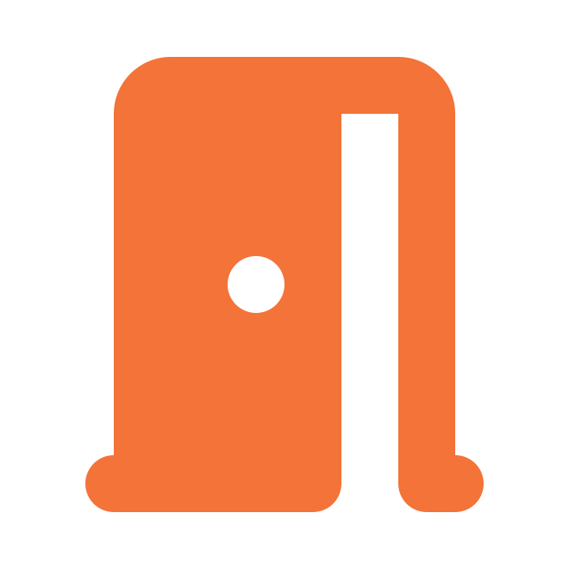
未利用スペースへの
クイック・安価設置
ネット通販が増えるほど、荷物の受け取りは悩みのタネ。「再配達待ち」も「在宅縛り」もストレスです。
トリイクなら、お客さまはいつものお店で荷物を受け取れ、来店する理由が生まれます。
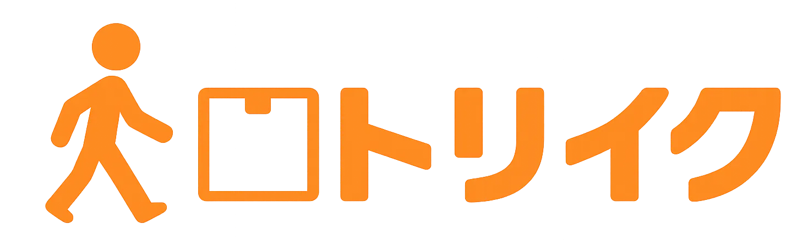
店舗・SC向け
国の宅配ルール変更は目前。取り残される前に、未利用スペースを『選ばれる理由』に変える。
全EC・全宅配業者に対応した「EC荷物受取りスポット」をご提供します。
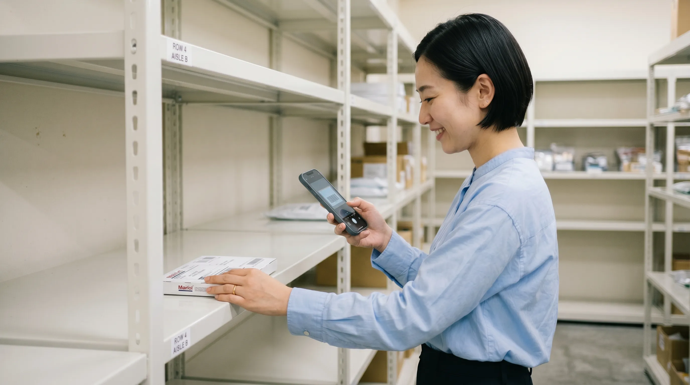
トリイク導入・官民協業・
メディア掲載実績多数


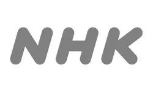


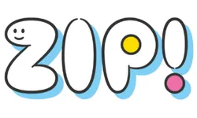
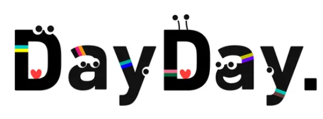
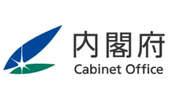

MOVIE
サービスの全体像を動画でサクッと理解できます
Social Issue
ECの普及や人口減少等で店舗の客数が年々減少。差別化と客数の維持・増加が、小売店舗の最大の経営課題に。
数十を超える店舗を有するチェーン小売事業者は、ECの普及で年々店舗の客数が減少。他社との差別化や、既存のお客さまに「この店へ通い続けてもらう理由」づくりに頭を悩ませている。人流を増やしようにも、値下げキャンペーンやチラシ配布等のありふれた広告宣伝に頼らざるを得ず、新たな来店動機を生み出せていない。
賃上げの波でパート・アルバイターの人件費が上昇、物流費や仕入れ値の上昇により、利益率も日増しに低減。ますます経営環境は厳しくなっており、何かこの環境を打破できる新たな施策を求めている。
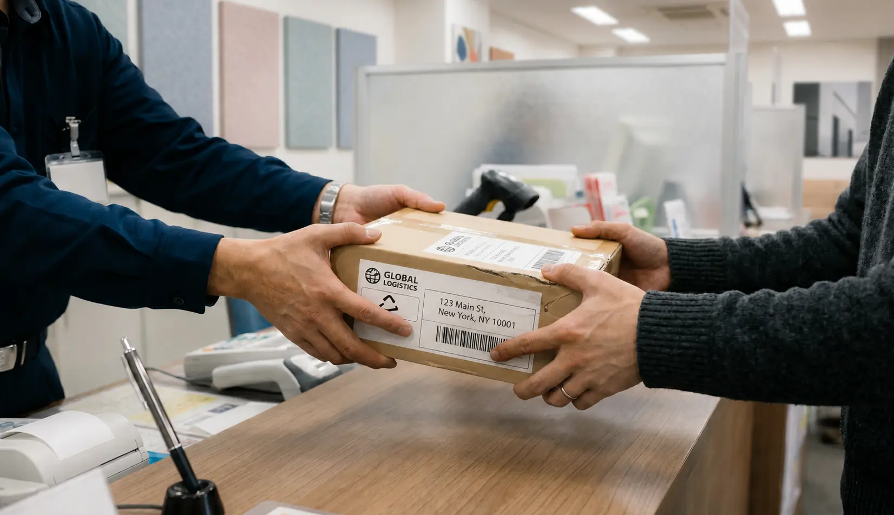
本部から「地域共創やSDGsへ貢献する店舗独自企画」を求められるものの、現場には具体的なアイディアや割けるリソースがないのが実情。「地域や消費者のために当店は何ができるのか」と頭を悩ませており、自店の売上確保と地域社会への貢献プレッシャーの間で、打開策を見出せずにいる。
About Toriiku
「再配達待ち」「在宅縛り」「盗難不安」──消費者が抱える受取の困りごとを、いつもの店舗で解決。既存のお客さまの満足度を高め、通い続ける理由をつくる地域インフラへ。

ネット通販が増えるほど、荷物の受け取りは悩みのタネ。「再配達待ち」も「在宅縛り」もストレスです。
トリイクなら、お客さまはいつものお店で荷物を受け取れ、来店する理由が生まれます。
消費者がECで荷物を受取る都度、いつもの店舗が受取拠点に。利用の都度ポイント付与で、リピートを後押し。トリイク利用者の28%がついで買いをする、クロスセル効果も国交省と立証済。
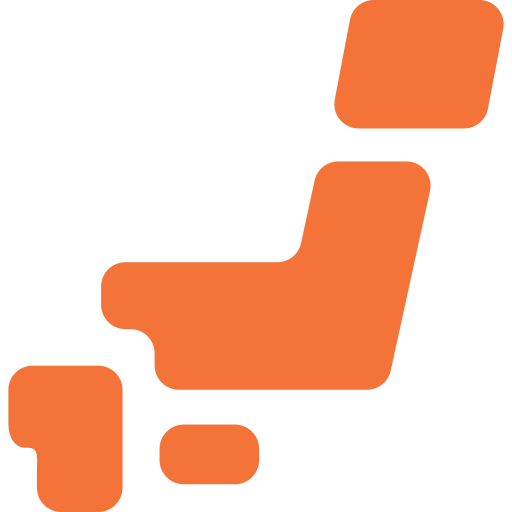
政府は2030年までに「自宅外での受取比率50%」の実現を掲げています。今後、店舗での荷物受取りが消費者の日常（標準）になるからこそ、地域に先駆けて早期導入することで、既存のお客様の来店の起点となる大きな先行者メリットを享受できます。
※ついで買い28%のクロスセル効果：国土交通省「多様な受取方法等の普及促進実証事業」における実証データ詳細はこちら（PR TIMES）をご確認ください。
Facility
屋内・屋外を問わず、1.5坪から設置可能です。
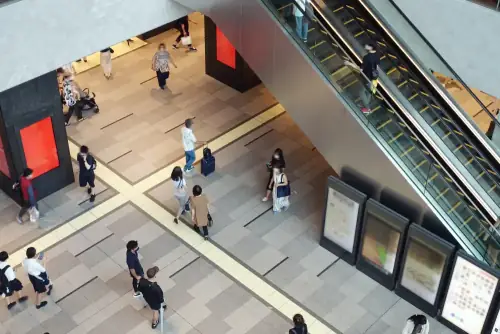
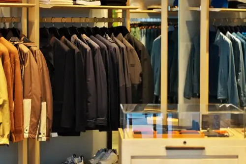
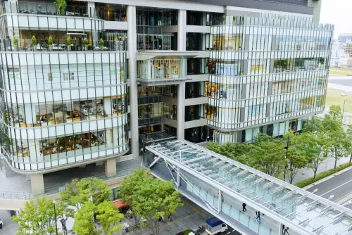
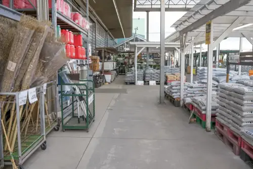
※上記以外にも、設置が可能なケースもございます。
下記の無料相談フォームより、お気軽にお問い合わせください。
Reason
継続利用率
95%超
トリイクが、"お店に通い続ける"仕組みに。
これを実現できるのは、国内で当社だけです。
一度使った利用者の95%超が継続利用。独自の「受け取り × ポイント付与（特許取得済）」の仕組みにより、チラシや値下げに頼らず、既存のお客様が自発的に何度も足を運ぶ強い来店動機を生み出します。
※継続利用率95%超：国土交通省「多様な受取方法等の普及促進実証事業」における実証データ詳細はこちら（PR TIMES）をご確認ください。
「仕事帰りやお迎えのついでに、いつものお店でサッと鍵を開けて受け取れるのが本当に楽。わざわざ別の場所に荷物を取りに行く必要がなくなりました」
「荷物を取りに店舗の中に入るので、ついでに今夜のおかずや日用品もここで買って帰ろう、という習慣が自然と身につきました」
「Amazonでも楽天でもメルカリでも、普段使う通販の荷物が全部このお店に届くから便利。受取場所を1つにまとめられるのが嬉しいです」
「家で再配達を待つストレスが消えるだけでなく、大好きな電子マネーやポイントに等価で交換できるので、使うのをやめる理由がありません」
Spot
宅配荷物を無人で受け取れる、1.5坪から置ける小部屋型の受取拠点です。
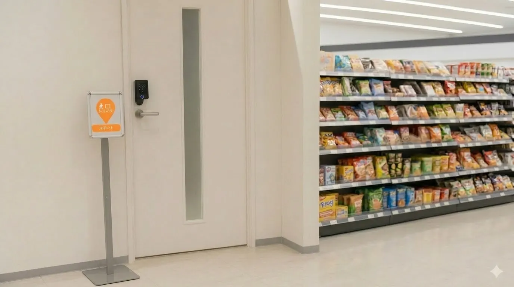
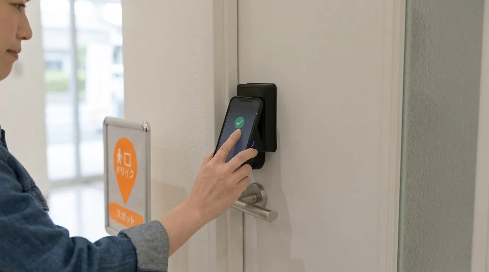

Use Case
他テナントには貸しづらい狭小・変形スペースを有効活用。
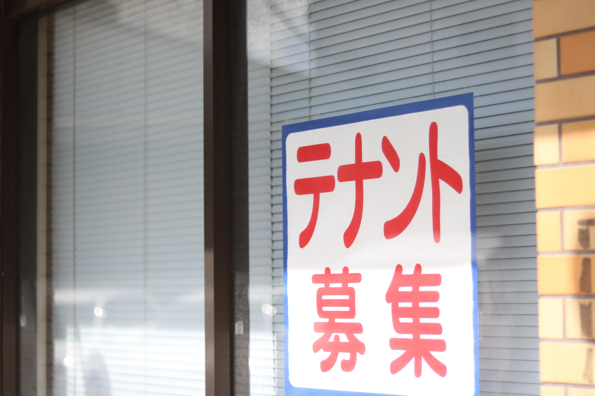
① テナントに貸し出せない区画
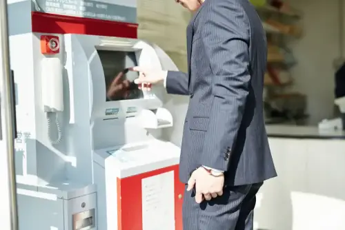
② ATM撤去後の空きスペース
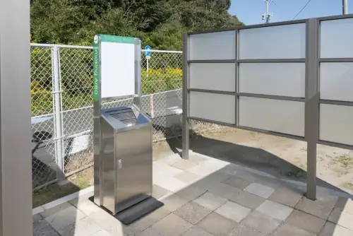
③ 使われなくなった喫煙所
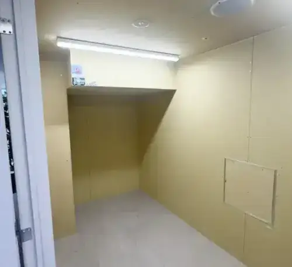
④ 使われていない倉庫・バックヤード
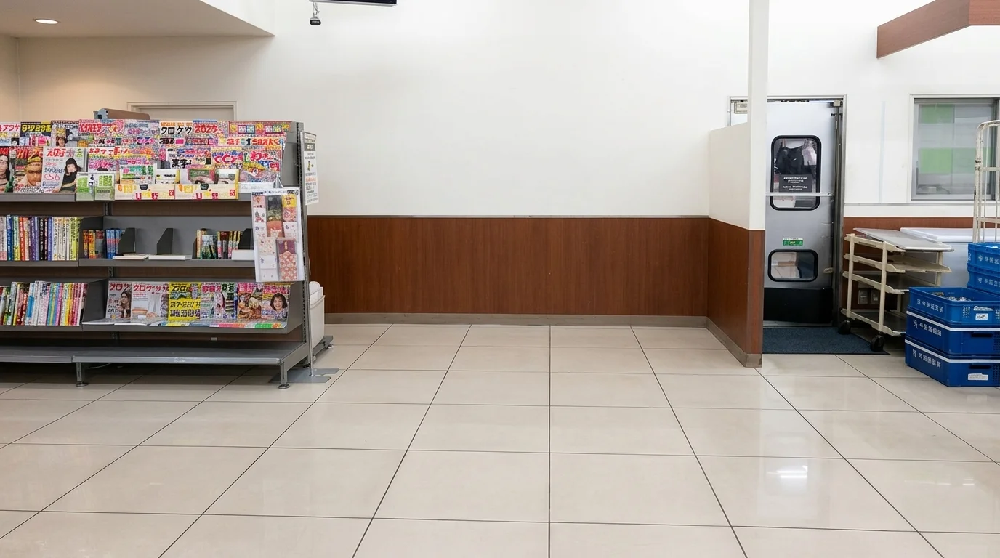
⑤ 埋まらない催事・イベントスペース
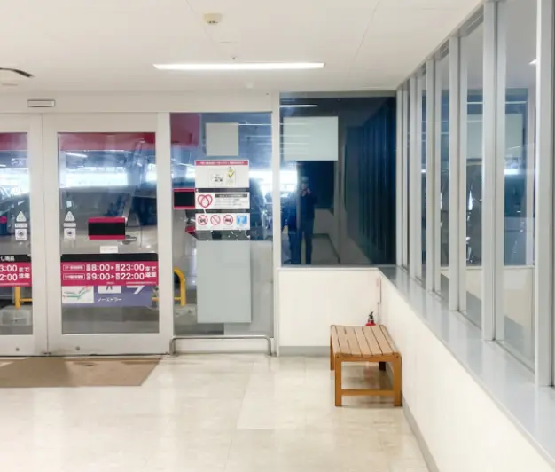
⑥ エレベーター・立体駐車場接続部
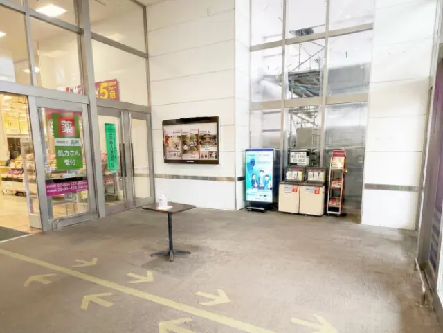
⑦ 施設入口・空き区画
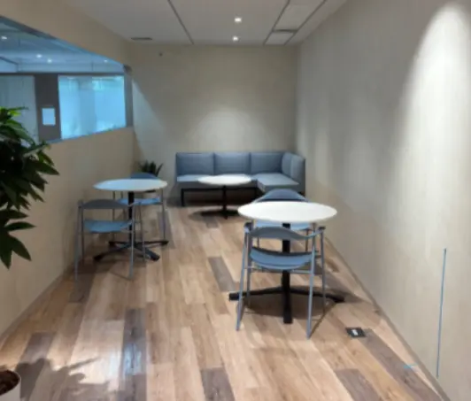
⑧ あまり利用されない休憩所
Achievement
トリイクスポットの運用実績から実証された、店舗・商業施設にもたらされる3つのメリット。
日常の通販利用がそのまま自店への来店動機に。「荷物の受取り」を起点に、既存のお客様が他店へ流出するのを防ぎ、店舗への立ち寄り回数を自然に引き上げた実績が出ています。
在宅縛りや再配達のストレス、置き配の盗難不安を「いつものお店」でスマートに解決。お買い物ついでに用事が済む、地域に不可欠な便利スポットとして高い顧客満足度を誇ります。
深刻化する物流問題やCO2削減へ直接コミット。地域社会に貢献する店舗として、統合報告書やSDGsの具体的な取り組み・実績としても力強くアピール可能です。
Trusted by
国・自治体・大手不動産会社との実証・連携実績。
実績 ① 経済産業省
革新的な新規事業として、適法性を確認。
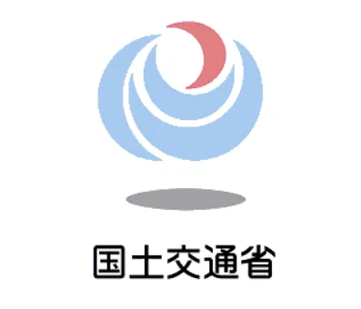
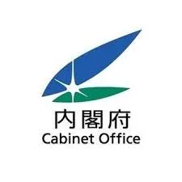
実績 ③ 自治体
自治体・行政との連携実績を持ち、地域物流課題に取り組み中。
実績 ④ メディア
大手不動産・行政との実証実績は、各種メディアでも紹介。
※個別の連携状況・採択事業の詳細は、ご相談時にご案内いたします。
Case Studies
大型商業施設・大手不動産会社との取り組み事例。
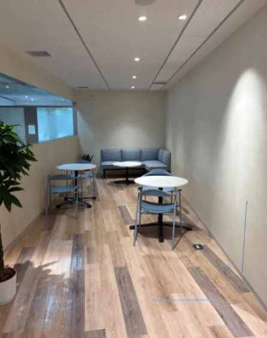
オフィスの4坪空きスペースを活用。
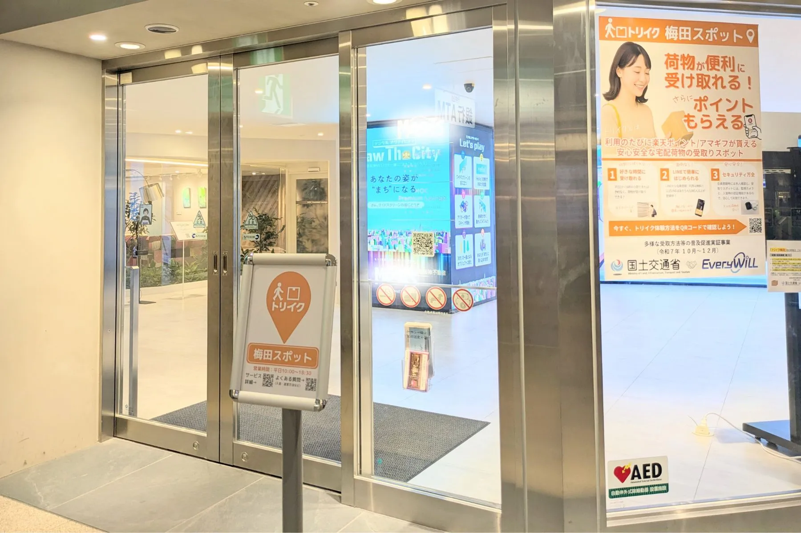
商業施設内の1.8坪の倉庫を活用。
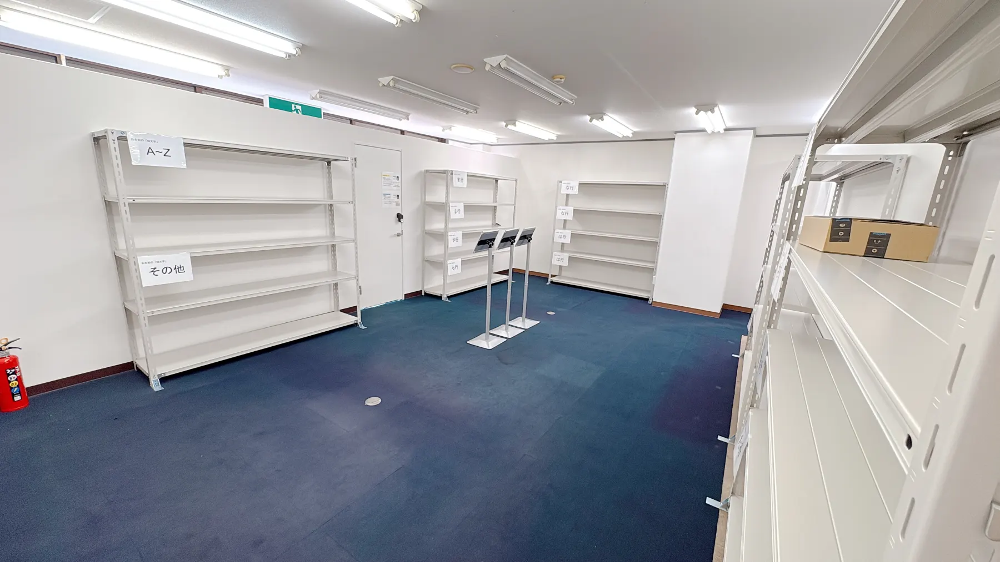
集合住宅の１階を活用。
Flow
無料相談から運用開始まで、最短1ヶ月で完了します。
ヒアリング・設置場所の確認
所要時間：30分〜1時間
費用と収益見込みの提示
店舗手間ゼロでスタート
最短1日〜数日で完了
営業時間中も施工可能
運営はトリイク運営会社
最短1ヶ月で運用開始可能
Support
設置から運用、利用者対応まで、運営会社がワンストップで担当します。
工事手配は、すべて運営会社が対応。営業時間中の施工も可能で、施設への影響を最小化。
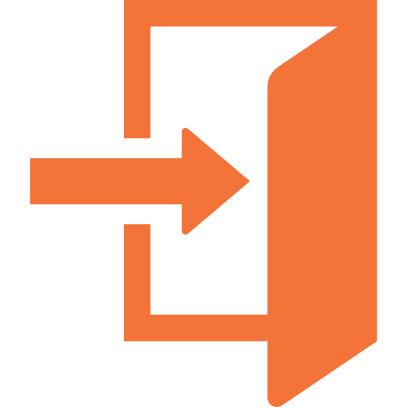
トリイクの既存会員基盤（1万人超）から、お客さまが自動で店舗に流入。販促・集客の手間ゼロで来店動機を獲得できます。
運営・保守・お客様対応・スタッフレクチャーまで、ワンストップ対応。
デジタル不慣れな利用者への案内も運営会社が実施。LINE窓口も完備し、施設スタッフの手を煩わせません。
これからの店舗・施設は、ただ「物を売る場所」から、置き配の盗難や空き巣（留守バレ）等の犯罪から地域住民を守る「安全な受取拠点」としての役割が求められるようになります。
取り残される前に「地域の受取拠点」を準備しませんか？
2030年に向けて「自宅手渡し＝有料化」が進み、置き配が標準に。それに伴う地域での荷物盗難やトラブルの増加を防ぐ対策が、店舗に求められます。
国は2030年までに、全荷物の半分（50%）を「自宅以外」で受け取る社会を目指しています。地域住民が日常的に立ち寄る新たなインフラが、必要不可欠になります。
配送ドライバーの負担軽減と地域の安心安全を両立するため、国を挙げた「地域の受取拠点整備」が加速。これに応える店舗が、地域で選ばれる時代へ。
設置店では「95%超がリピート」し「28%がついで買い」する実証データが出ているため、早期の店舗防衛が不可欠です。
CONTACT
物流の社会課題と施設運営の新しい選択肢として、貴社の状況に応じてご相談に応じます。
FAQ
他の受け取り装置との違いに関するご質問もこちらにまとめています。
最大のメリットは、店舗側に運用負担を一切かけることなく「競合との差別化」と「ついで買いによる売上向上」を同時に実現できる点です。国の置き配標準化に伴い、近隣の競合店に先駆けて地域住民の「安心な受取拠点」となることで既存顧客を囲い込めます。さらに、トリイクの既存会員が自動で来店するため、利用者の28%がそのまま店舗で買い物を進めていくクロスセル効果（国交省と立証済）が期待できます。
国（国土交通省）の公式事業に採択されているため、国のお墨付きのもと、地域住民が必ず立ち寄る『新たな生活拠点』として圧倒的な店舗の差別化を確立できます。
現在、国はドライバー不足や防犯対策として「荷物の半分を自宅以外（店舗など）で受け取る社会」を2030年までに実現しようとしています。トリイクは、その国策を推進するための国土交通省「多様な受取方法等の普及促進実証事業」に採択されたサービスです。「再配達の有料化」や「置き配の標準化」が進むこれからの時代、国の強力な後押し（インフラ）を背景に、地域に選ばれる店舗へと進化していけます。
Amazon・楽天市場・Yahoo!ショッピング・ZOZOTOWNなど、主要なECサービスすべての荷物に対応しています。
ヤマト運輸・佐川急便・日本郵便・Amazon配送など、主要な宅配業者すべての荷物に対応しています。特定キャリアに縛られないため、利用者は普段ご利用の宅配業者を変更することなく受取場所として指定できます。
屋内・屋外を問わず、1.5坪の未利用スペースから設置可能です。狭小・変形スペースにも対応します。
棚管理と回転率の高さで満杯問題が実質発生しない設計、屋内外を問わない設置自由度、主要EC全般への対応、地域物流への直接貢献といった点が異なります。詳細は本ページの「他の受け取り方法との違い」をご覧ください。
国土交通省・内閣府との連携、東京都・埼玉県・沖縄県との事業連携実績があります。地域の物流課題に取り組む文脈での連携余地もあります。
運用・管理・お客様対応・スタッフへのレクチャーまで、すべて運営会社が担当します。施設・管理会社の管理負担は発生しません。
工事の手配・施工は運営会社がすべて対応します。営業時間中の施工も可能で、最短1日〜数日で完了します。
テナント退去後の狭小・変形区画、ATM跡地、元喫煙所、催事・イベントスペース、倉庫・バックヤードなど、テナントには貸しづらい未利用スペース全般です。
トリイクはわずかなスペースで設置できるため用途変更の手続きは原則ございません。また、国土交通省の「グレーゾーン解消制度」を通じて適法性も確認されています。設置にあたってご不明な点やご不安なことがございましたら、まずはお気軽にご相談ください。
デジタル不慣れな利用者・来館者への案内も運営会社が実施します。スタッフ様への事前レクチャーも対応します。
トラブル対応は運営会社がすべて実施します。不具合・盗難等は運営会社加入の保険範囲内で補償し、施設様にご負担はかかりません。
はい。再配達削減・置き配リスク低減を、サステナビリティ報告書や統合報告書で具体的な取り組みとして訴求いただいている事例があります。
再配達の負担軽減はドライバーの労働環境改善に直結します。また利用者にとっても、確実・安全に荷物を受け取れる点と、ポイント制度により嬉しい設計となっています。